1. Layered glass
Glass hexagon, the beta, and the key laid over its lower bowl. Closest to concept D with the beta layered in.
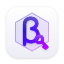
64 / 32 / 16 px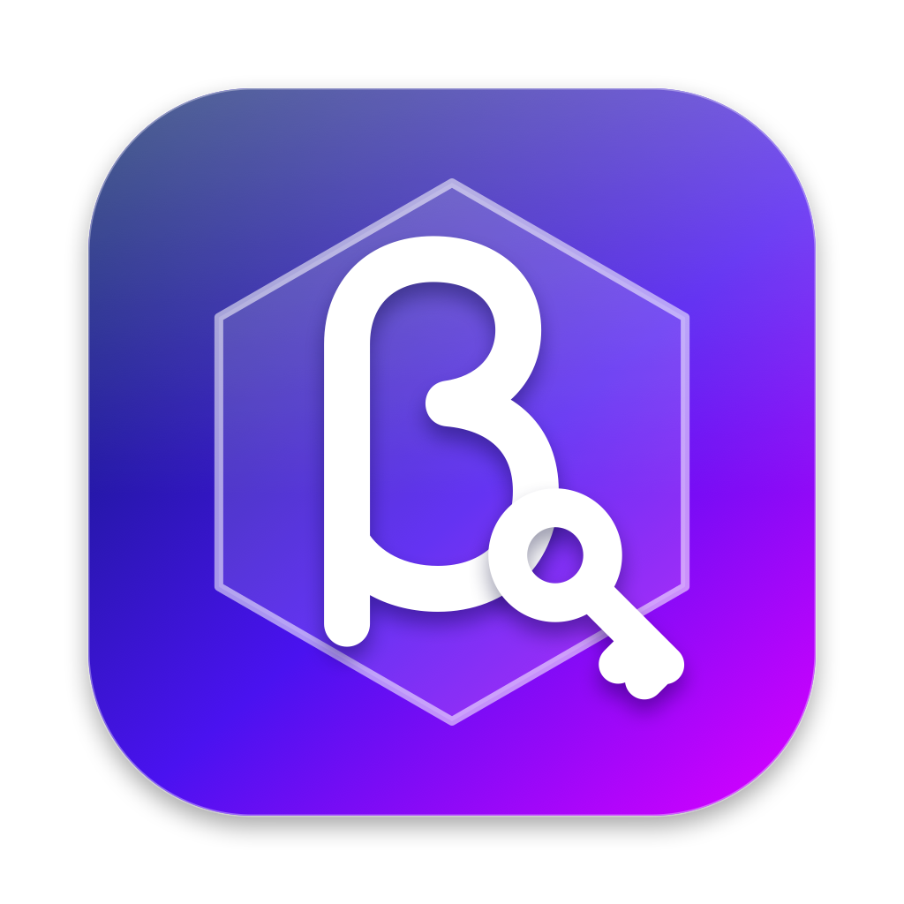
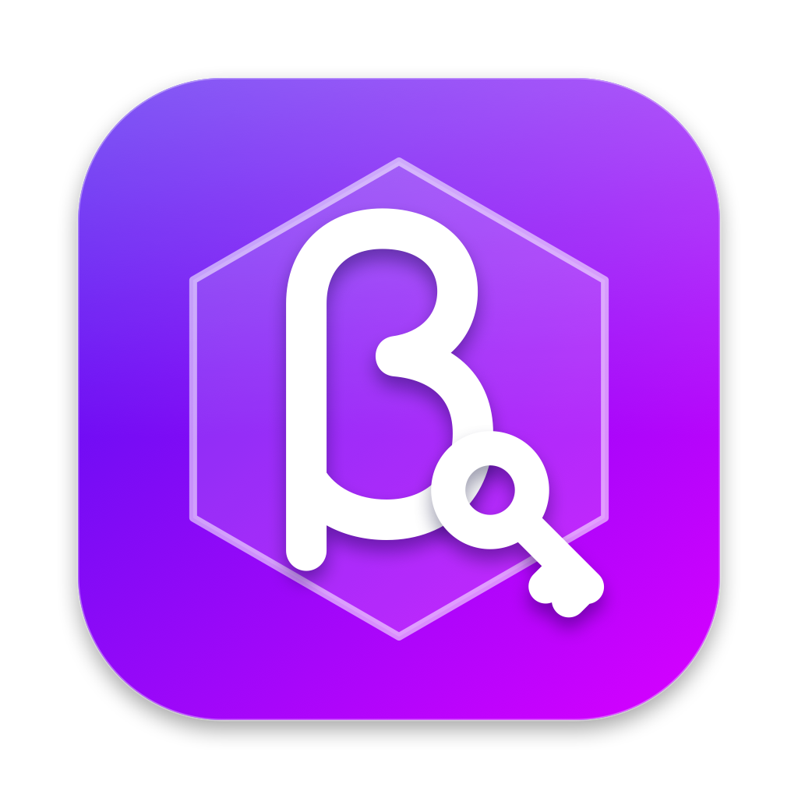
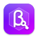
64 / 32 / 16 px2. Key with the beta in its bow
The beta sits inside the key's bow, all inside the hexagon. Clearest single idea: a key for the beta token.
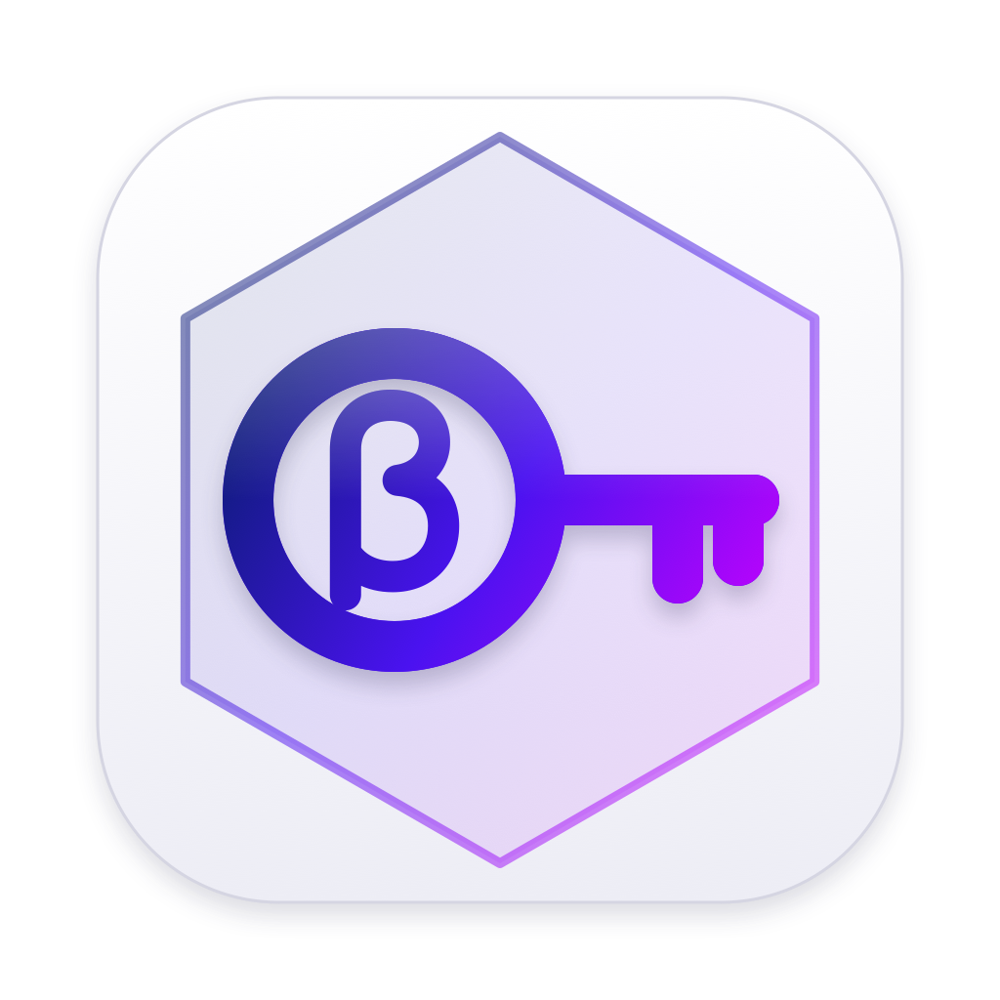
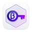
64 / 32 / 16 px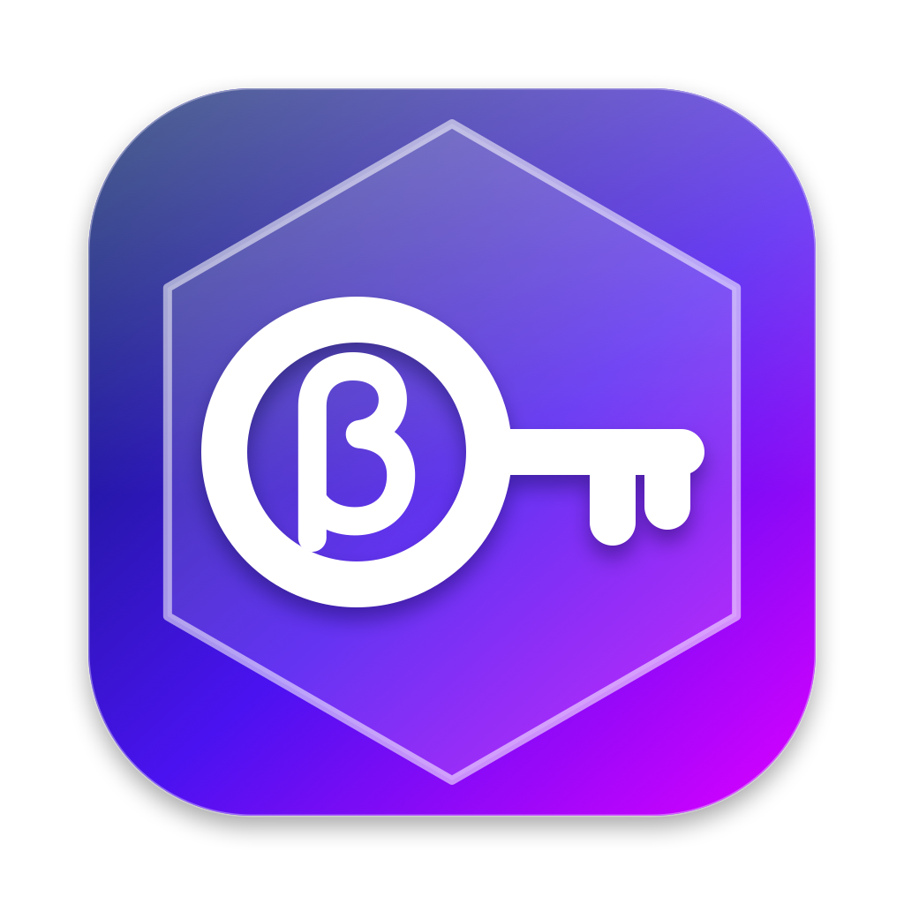
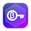
64 / 32 / 16 px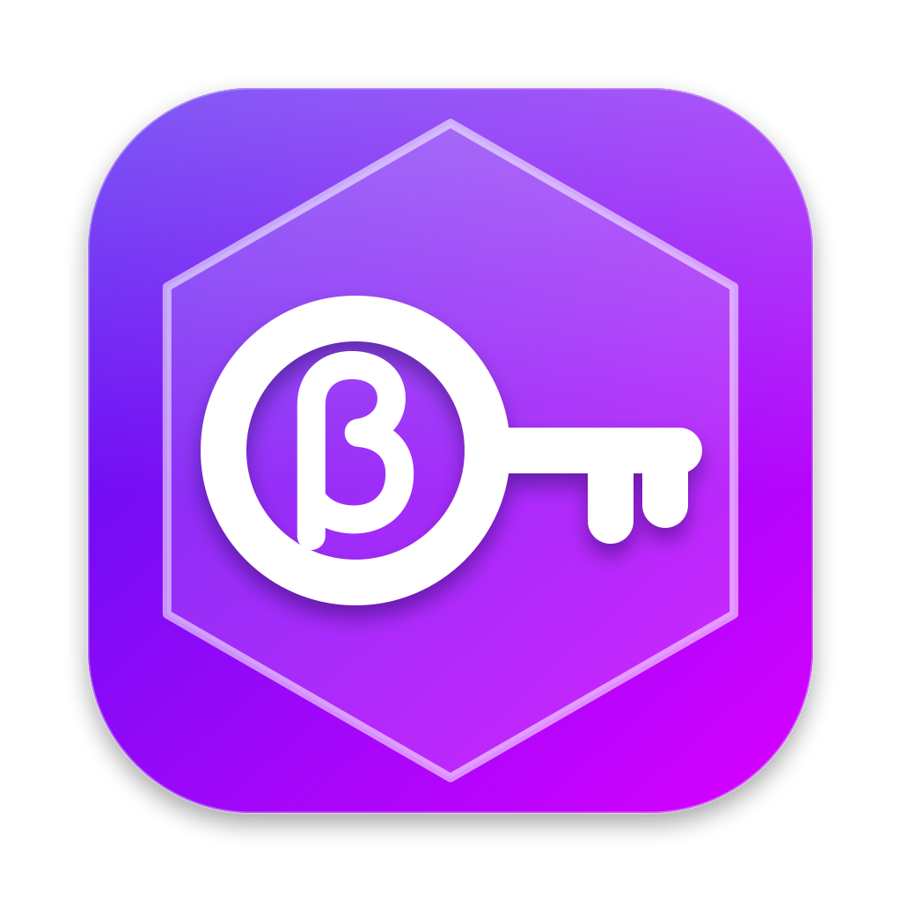
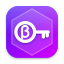
64 / 32 / 16 px3. Beta with key badge
Large beta in a hexagon outline with a small key badge on the corner. Beta first, key second.
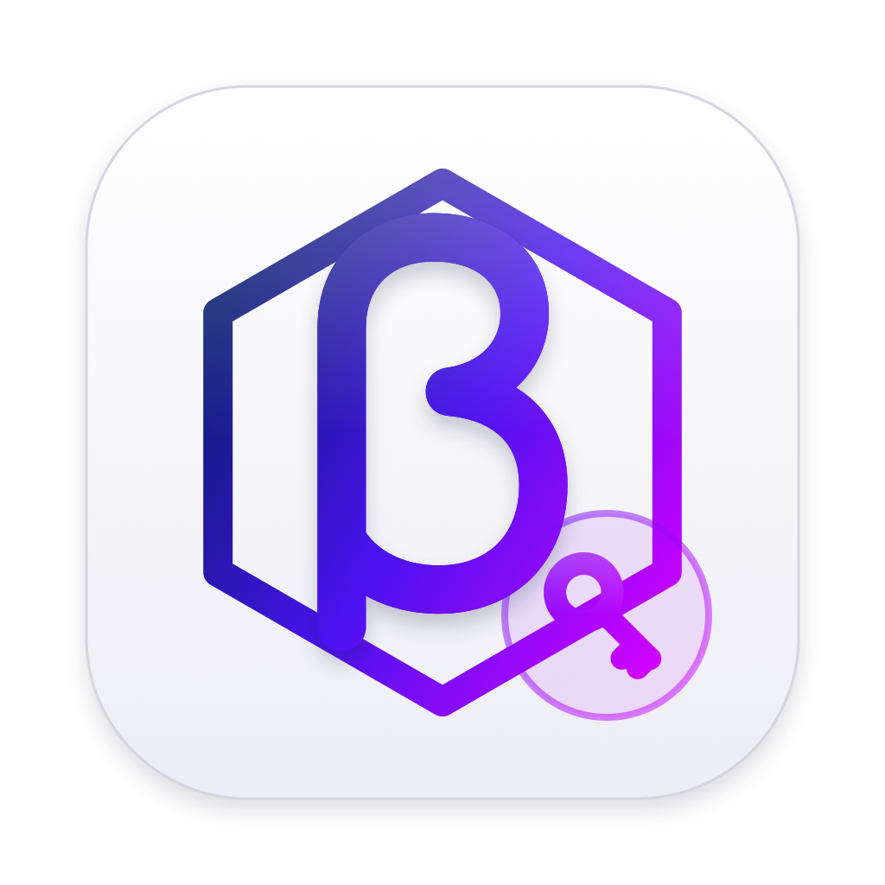
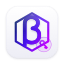
64 / 32 / 16 px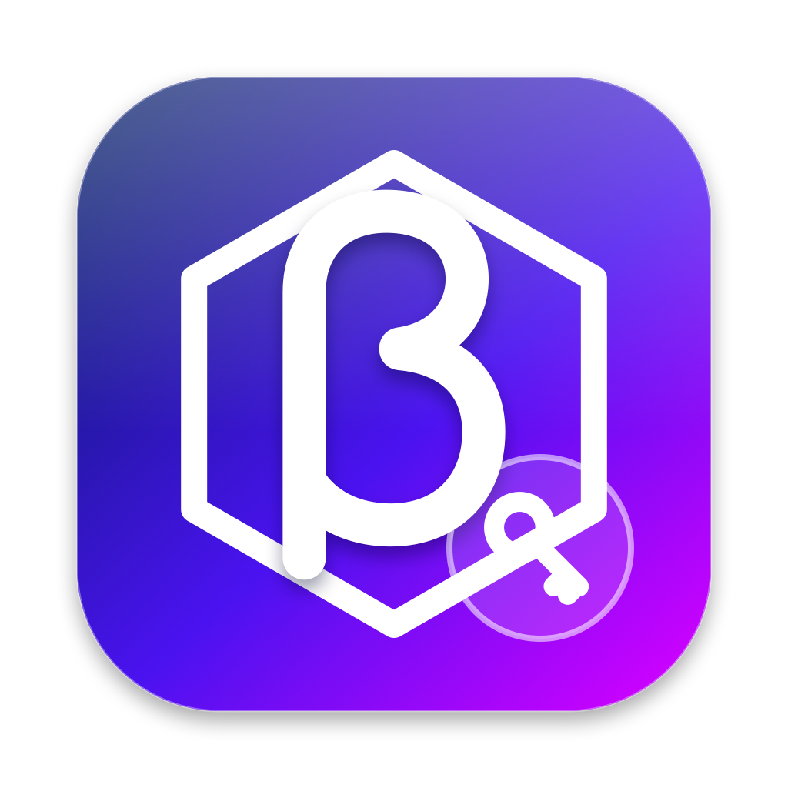
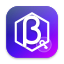
64 / 32 / 16 px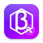
64 / 32 / 16 pxNotes
Chosen: variant 1 (layered glass: hexagon, beta, key) on the Omnissa gradient tile. The other variants and tile styles are kept for reference.
The beta is a drawn monoline path, not a font glyph (Outfit has no Greek characters). Not yet checked against the Omnissa brand guidelines, and no official logo was available. The app ships variant 1 on the Omnissa gradient tile (assets/AppIcon.icns).
Switch the icon: make_icon iconset <variant> <tile> assets/AppIcon.iconset, then python3 tools/make_icns.py assets/AppIcon.iconset assets/AppIcon.icns, then tools/make_app.sh. For a macOS 26 Liquid Glass icon, compose the layers in Icon Composer (Xcode 26).